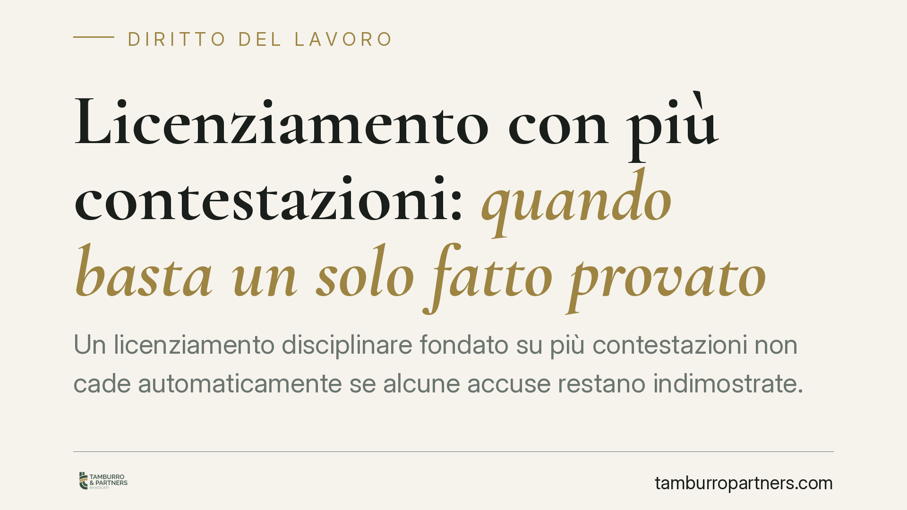

Licenziamento con più contestazioni: quando basta un solo fatto provato
Un licenziamento disciplinare fondato su più contestazioni non cade automaticamente se alcune accuse restano indimostrate. La Cassazione precisa che ciò che conta è la gravità del fatto effettivamente provato, non il numero degli addebiti. Una lettura che incide su come si costruisce e su come si difende un recesso per giusta causa.

Il caso
Un datore di lavoro contesta al dipendente più condotte, riunite in un'unica lettera di addebito, e procede al licenziamento per giusta causa. In giudizio, però, solo alcune delle accuse trovano riscontro probatorio; altre vengono smentite o restano indimostrate.
La domanda è semplice e ricorrente: il licenziamento resta valido se anche un solo fatto contestato risulta provato, oppure il venir meno di parte degli addebiti ne mina la legittimità?
Inquadramento normativo
Il riferimento è all'art. 2119 del Codice civile, che consente il recesso senza preavviso quando si verifica una causa che non consente la prosecuzione, anche provvisoria, del rapporto (la cosiddetta "giusta causa"). Sul versante delle tutele opera l'art. 18 dello Statuto dei Lavoratori (legge n. 300/1970), che gradua le conseguenze del licenziamento illegittimo a seconda del vizio accertato.
La Cassazione Civile, Sezione Lavoro, ha chiarito che, in presenza di una contestazione disciplinare articolata su più fatti, il giudice deve valutare la gravità complessiva della condotta effettivamente accertata. Ciò significa che il licenziamento può reggere anche quando solo parte degli addebiti risulti provata, a una condizione: che i fatti dimostrati raggiungano un "nucleo minimo" di gravità idoneo, da solo, a giustificare il recesso.
Il criterio non è quantitativo ma qualitativo. Non rileva quante accuse cadono, ma se ciò che resta è sufficiente a integrare la giusta causa o il giustificato motivo soggettivo.
Implicazioni pratiche
Per il datore di lavoro la pronuncia ha un duplice valore. Da un lato, conforta chi contesta più condotte e teme che la caduta di un singolo addebito travolga l'intero provvedimento. Dall'altro, segnala un rischio concreto: "gonfiare" la contestazione con fatti deboli o non documentabili non rafforza il licenziamento. Anzi, espone l'azienda a contestazioni sulla genuinità dell'intero impianto disciplinare e indebolisce la posizione probatoria.
L'errore tipico è ragionare per accumulo, confidando che la somma di più addebiti minori produca automaticamente la gravità richiesta. Non è così. Se nessuno dei fatti, preso singolarmente o nel suo effettivo accertamento, raggiunge la soglia, il licenziamento resta sproporzionato.
Per il lavoratore la decisione chiarisce che la difesa non può limitarsi a smontare alcune accuse. Occorre concentrarsi sull'addebito più solido e contestarne in radice la sussistenza o la gravità. Dimostrare che tre contestazioni su cinque sono infondate non basta, se le due residue integrano già una giusta causa.
Resta poi sempre aperta la valutazione di proporzionalità: anche il fatto provato deve essere proporzionato alla sanzione espulsiva, tenuto conto delle previsioni del contratto collettivo applicabile e delle circostanze concrete.
Cosa fare in concreto
- Datore di lavoro: seleziona gli addebiti. Contesta solo i fatti che puoi documentare e che hanno reale peso disciplinare. Evita di inserire condotte marginali o non provabili.
- Datore di lavoro: motiva la gravità. Nella lettera di licenziamento esplicita perché la condotta accertata, anche se unica, non consente la prosecuzione del rapporto.
- Lavoratore: individua l'addebito decisivo. Concentra la difesa sul fatto più grave, contestandone sussistenza, qualificazione e proporzionalità rispetto alla sanzione.
- Lavoratore: verifica il contratto collettivo. Controlla se la condotta contestata rientri tra quelle punibili con sanzioni conservative anziché con il licenziamento.
- Entrambi: agite nei termini. Rispettate le scadenze del procedimento disciplinare e dell'impugnazione del licenziamento, la cui inosservanza preclude la tutela.
La lezione è chiara: nel licenziamento disciplinare conta la solidità, non la numerosità. Una contestazione mirata e ben documentata vale più di un elenco di addebiti fragili.
Disclaimer
Contributo informativo a cura di Tamburro & Partners - Avv. Giuseppe Tamburro. Non costituisce parere legale.
Ogni storia di lavoro ha i suoi tempi.
Se gestisci HR e vuoi un confronto su contenzioso, ispezioni o licenziamenti, scrivi allo studio. Ti rispondiamo entro un giorno lavorativo.